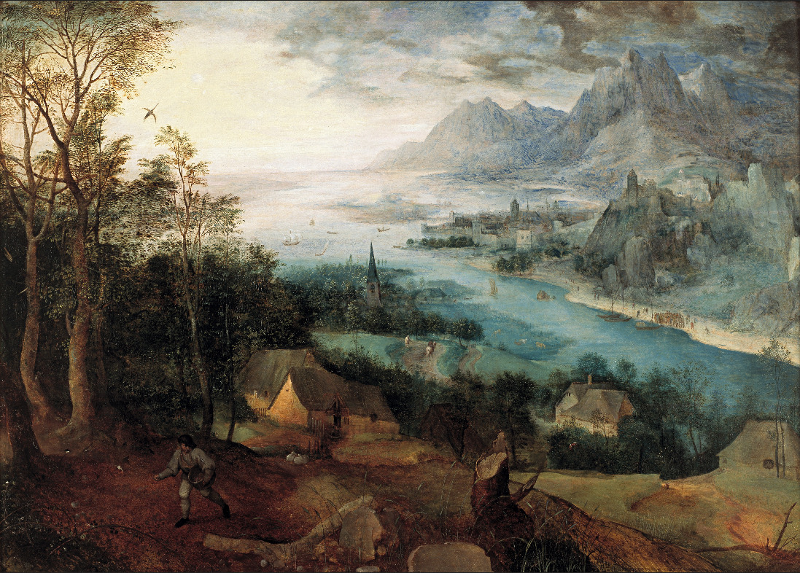
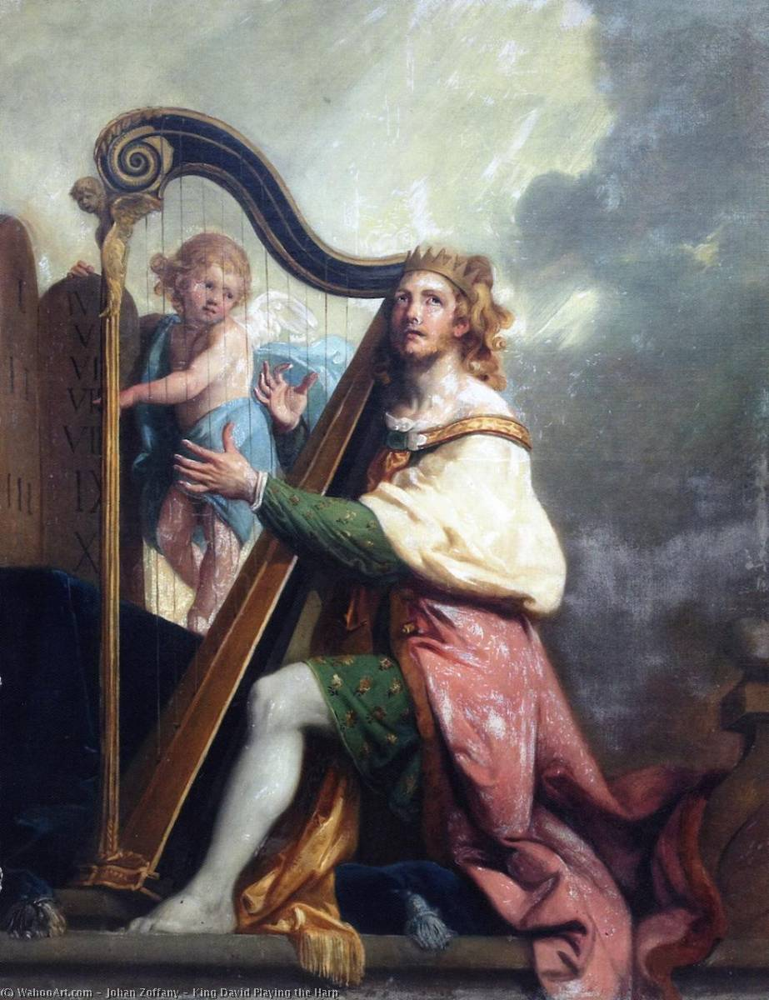
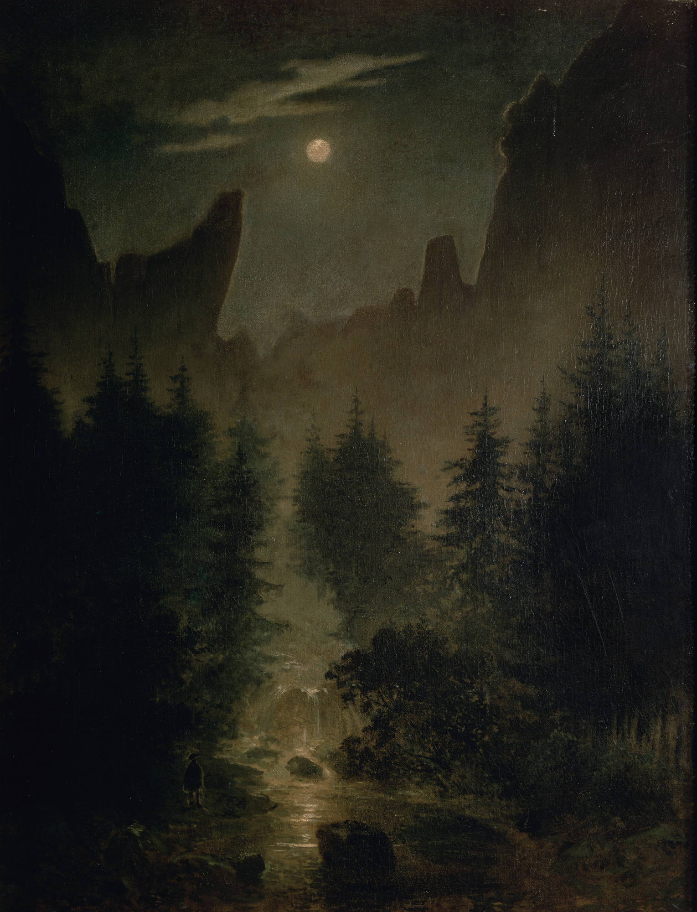
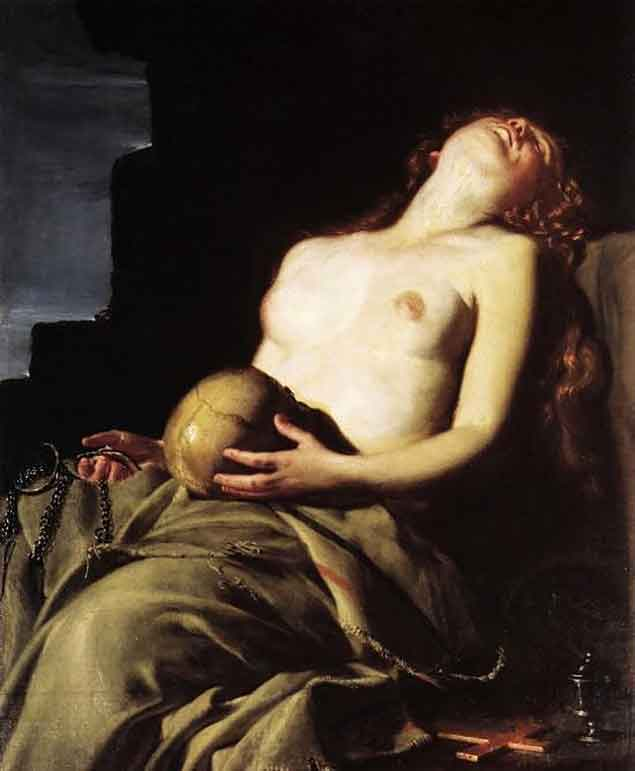
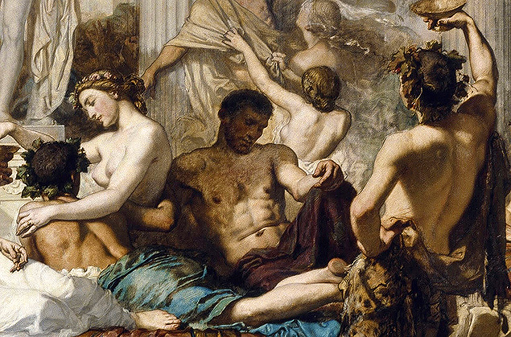
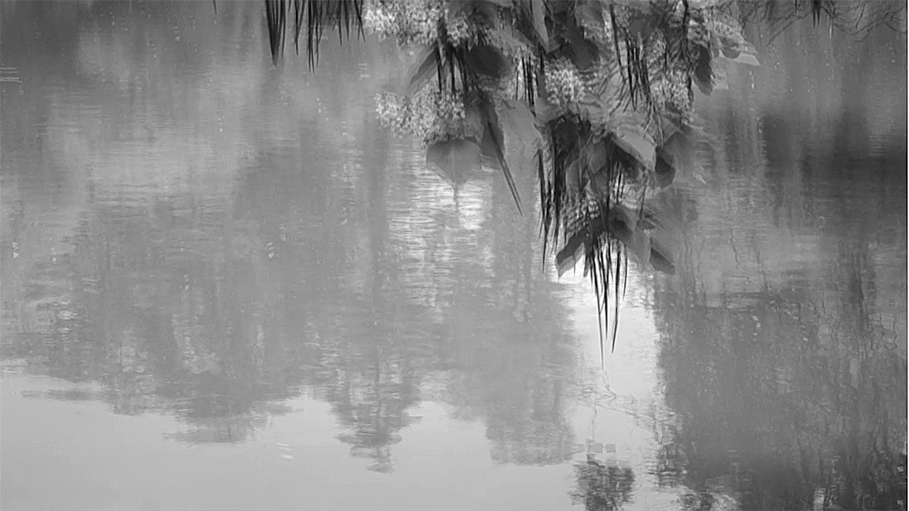
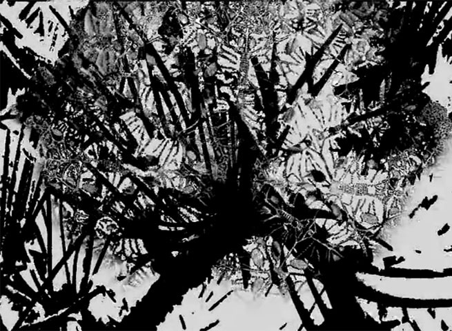
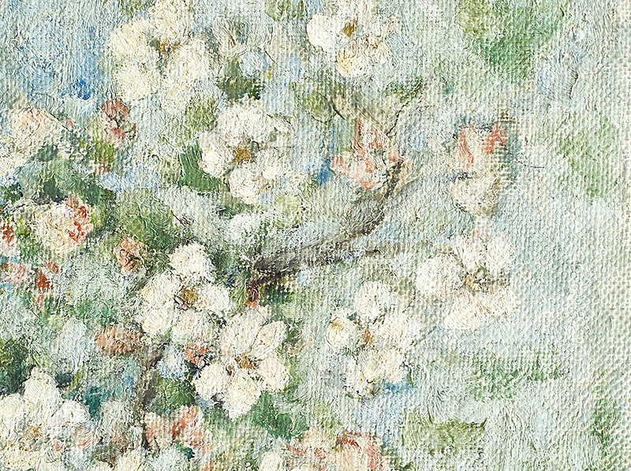

Portofoliu Muzical
Un catalog al lucrărilor finalizate și în curs

Fúlgura
Un mozaic sonor alcătuit din petece disparate de lumină

Hortus conclusus
Un imaginar sacru luxuriant dincolo de precaritatea lumii sensibile

Toamnă
Ecouri de gheață într-o călătorie antinomică prin iarna incipientă

Mirando al’ Bosco
Reflecții sonore la Grădina deliciilor a lui Hieronymus Bosch

Ieșit-a semănătorul
Eclectism modal cu suflu cinematografic

Primii zori
Geneza inefabilă a unei conștiințe

Doamne, auzi…
Eterofonie cromatică pe moduri de filiație bizantină

Pădurea din vis
Reverie și angoasă într-o lume fantastică în continuă schimbare
Șapte haiku-uri pe stampe cu păsări
Mix de sonorități electronice și compoziție tradițională

Mioritikon
O meditație sonoră pe tema aneantizării specificității românești

Magii
O permanentă oscilare între incertitudine, reverie și speranță

Ici-bas (Aici jos)
O reiterare a Recviemului de război al lui Benjamin Britten
Due Miniature Futile (Două miniaturi fără rost)
Un diptic cameral despre inocența pierdută

Exerciții de supraviețuire
O muzică șocant de rudimentară, simplă și nedisimulată

Cântări din Valea Plângerii
Lumea pământească: trecătoare, înșelătoare și plină de suferință

Uitare de sine
O muzică rătăcitoare într-un univers dezrădăcinat

Racul, broasca și știuca
Trei portrete de vietăți în cheie comică
Et Dieu créa la femme (Și a făcut Dumnezeu femeie)
O privire fără menajamente asupra „miracolului feminin”

Cântec de trecere
O muzică austeră redusă la esență

Muzica surzilor
Trei studii de compoziție în absența pianului

Lumină prostetică
Materialul muzical, între mecanism și improvizație

Rugăciunea Sfântului Efrem Sirul
Material bizantin într-un cadru predominant polifonic

Florile Dalbe
Un colind precreștin cu substrat social trist

Dies Irae
Suită mistică pentru pian între atonalism și filiație bizantină